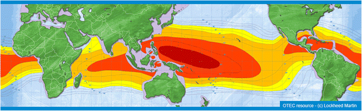
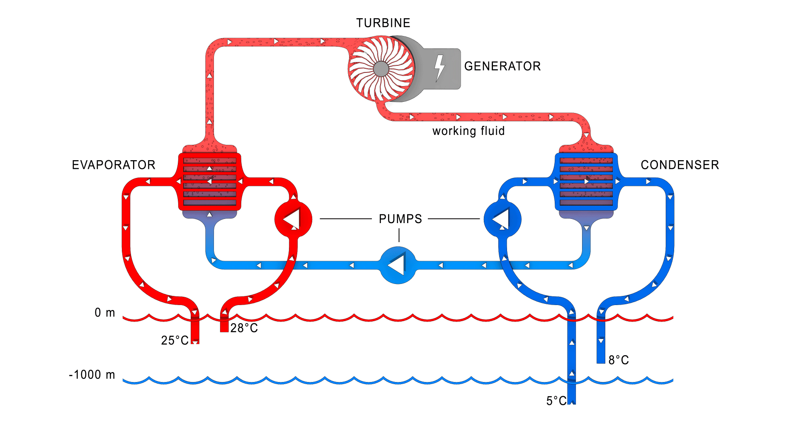

🔆 Focus
Utilizing temperature differences between warm surface water and cold deep seawater to produce renewable electricity and freshwater.
⚙️ Key Detail
This project outlines a closed-cycle OTEC system that uses low-boiling-point working fluids such as ammonia. The warm surface water evaporates the fluid, which drives a turbine to generate electricity. The vapor is then condensed by cold deep seawater, completing the cycle. The same process supports desalination for freshwater production in coastal regions.
📍 Site Selection Criteria
- Coastal regions with a temperature difference of at least 20°C between surface and deep water.
- Stable ocean conditions and minimal storm activity.
- Accessibility for laying underwater pipes and maintenance.

🏗️ System Architecture
The OTEC system includes the following components:
- Warm water intake pipe (surface ocean water)
- Evaporator and turbine-generator unit
- Condenser using cold deep seawater
- Working fluid circulation loop

🌿 Advantages
- Provides clean and renewable electricity.
- Produces freshwater as a by-product through desalination.
- Can operate 24/7 unlike solar or wind systems.
- Promotes coastal economic development.
⚠️ Disadvantages
- High initial construction and maintenance costs.
- Requires specific oceanic conditions (temperature gradient ≥ 20°C).
- Potential environmental impact on marine ecosystems.
⚖️ Comparison with Conventional Power Plants
| Parameter | OTEC System | Conventional Thermal Plant |
|---|---|---|
| Energy Source | Ocean temperature difference | Coal / Natural Gas |
| Emissions | Zero CO₂ Emissions | High CO₂ and pollutants |
| Operation Cost | Low (after setup) | High (fuel cost) |
| Freshwater Production | Yes (Desalination) | No |
| Reliability | Continuous Operation | Dependent on fuel supply |